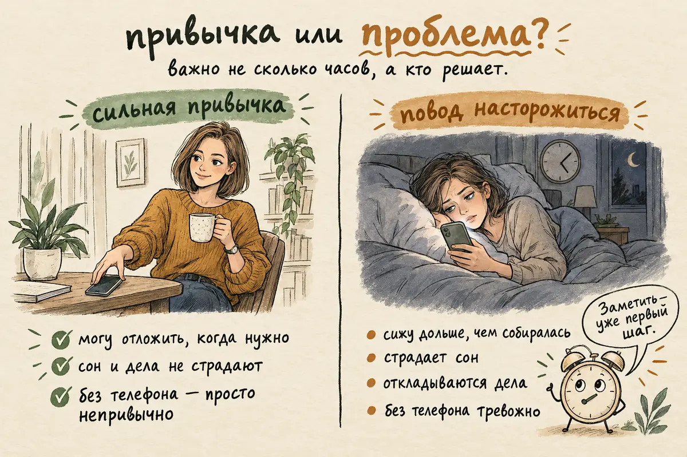
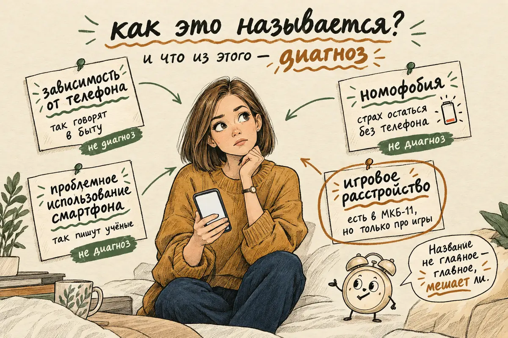
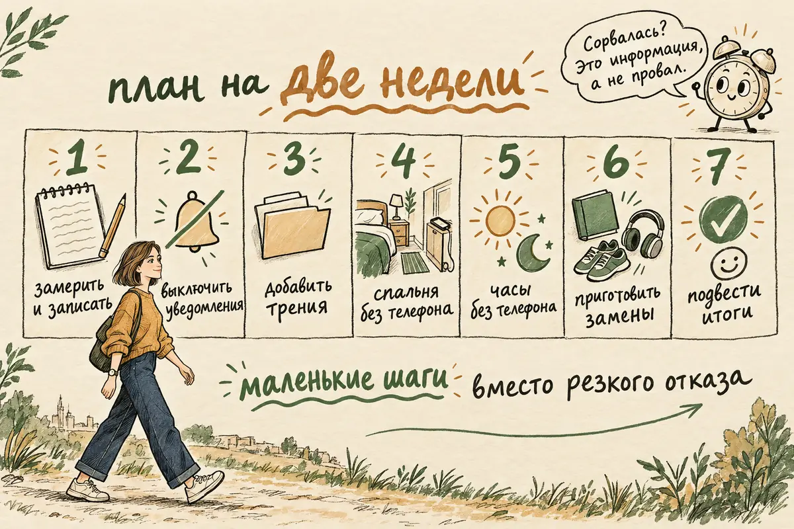
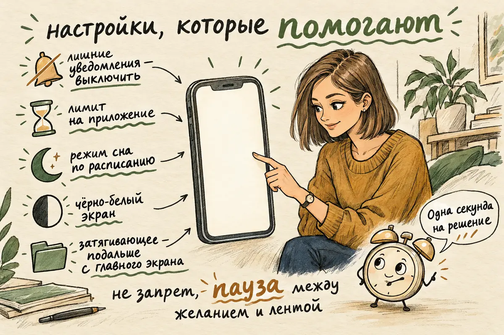

Главная → Блог → Зависимость от телефона
Зависимость от телефона: как называется, как отличить от привычки и как избавиться — взрослому и ребёнку
Обновлено: 25.10.2026 · Источники проверены: 25.10.2026 · 16 минут чтения
Подготовлено по материалам ВОЗ, российского закона об образовании и рецензируемым исследованиям использования смартфонов
Зависимость от телефона — это бытовое название состояния, при котором человек сидит в смартфоне дольше, чем хочет, не может остановиться и из-за этого страдают сон, дела и отношения. Отдельного диагноза с таким названием нет: специалисты говорят о «проблемном использовании смартфона», а страх остаться без телефона называют номофобией. То, что диагноза нет, не значит, что проблема выдуманная: последствия для сна, работы и отношений бывают вполне реальными. Обычно её поддерживают устройство самого телефона и то, от каких чувств он помогает отвлечься, поэтому начинать стоит не с запретов, а с перестройки среды: настроек, правил, мест без телефона и замен. Ниже — как отличить привычку от проблемы, план на две недели и что делать родителям, если речь о ребёнке или подростке.
- Привычка или зависимость: как понять, что телефон стал проблемой
- Как называется зависимость от телефона и болезнь ли это
- Почему телефон так затягивает
- Чем вредит — и что преувеличено
- Как избавиться от зависимости от телефона: план на две недели
- Настройки телефона, которые помогают
- Зависимость от телефона у детей и подростков
- Уколы и таблетки от зависимости от телефона: правда ли это
- Когда обратиться к специалисту
- Частые вопросы
Привычка или зависимость: как понять, что телефон стал проблемой
Отличает проблему не количество часов, а то, кто решает — вы или привычка, и чем вы за неё платите. Три часа видео в выходной, которые вы выбрали сами и после которых отдохнули, — не проблема. Сорок минут ленты в постели каждую ночь вместо сна — уже повод что-то менять, хотя цифра меньше. Поэтому общей «нормы экранного времени» для взрослых нет. И если телефон — рабочий инструмент, считать стоит не всё время в экране, а только ту часть, которая уходит на ленту, видео и игры: часы в рабочем мессенджере и навигаторе — не то же самое.
| Сильная привычка | Повод насторожиться | |
|---|---|---|
| Контроль | Можете отложить телефон, когда нужно | Снова и снова сидите дольше, чем собирались |
| Сон | Иногда засиживаетесь допоздна | Регулярно ложитесь позже или берёте телефон ночью |
| Дела и люди | Телефон не мешает работе, учёбе и встречам | Откладываются важные дела, близкие жалуются, что вы «не здесь» |
| Без телефона | Немного непривычно | Сильная тревога, раздражение, пустота |
| Попытки сократить | Получается, если захотеть | Пробовали много раз и возвращались к прежнему |
Чтобы оценить себя честно, ответьте на несколько вопросов о последствиях — без баллов, просто для себя:
- Получается ли у меня остановиться в то время, которое я сам себе наметил?
- Сколько раз за последнюю неделю я ложился позже из-за телефона?
- Что я чувствую, когда телефона нет под рукой, — лёгкое неудобство или тревогу?
- Есть ли дела, которые я давно откладываю, а время на ленту при этом находится?
- Говорили ли мне близкие, что я «всё время в телефоне»?
- Продолжаю ли я, хотя уже вижу последствия — недосып, сорванные дела, ссоры?
- Стал ли телефон главным или единственным способом справляться с тяжёлыми чувствами?
Это не проверенная шкала и не диагноз, а ориентир для самонаблюдения. Если на большую часть вопросов ответ «да» и это длится не первый месяц, привычка, скорее всего, стала проблемой. Это ещё не повод для паники — с ней можно работать самостоятельно, план ниже. Почему после долгой ленты всё остальное кажется скучным и что такое «лёгкий дофамин», подробно разобрано в статье о дофамине простыми словами.

Как называется зависимость от телефона и болезнь ли это
Единого медицинского названия нет: в быту говорят «зависимость от телефона», исследователи — «проблемное использование смартфона», а страх остаться без телефона называют номофобией. Слово «номофобия» — сокращение от английского «no mobile phone phobia», «страх остаться без мобильного». Это не диагноз, а описание: тревога, когда телефон разрядился, остался дома или нет сети. Встречаются и другие слова — «гаджет-зависимость», «интернет-зависимость», «смартфономания», — но ни одно из них не входит в медицинские классификации как отдельная болезнь.
В Международной классификации болезней МКБ-11 есть близкий диагноз — игровое расстройство. Он касается компьютерных и мобильных игр, когда человек теряет контроль над игрой, ставит её выше других интересов и продолжает, несмотря на вред, обычно не меньше года. Есть и расстройство, связанное с азартными играми, — о нём подробно в статье о лудомании. Но лента, мессенджеры и видео в эти диагнозы не входят.
| Что это значит | Диагноз ли это | |
|---|---|---|
| «Зависимость от телефона» | Бытовое название: трудно оторваться, страдают сон и дела | Нет, это разговорное выражение |
| Проблемное использование смартфона | Термин исследователей: потеря контроля, тяга, вред для жизни | Нет, критерии у разных учёных разные |
| Номофобия | Тревога, когда телефона нет под рукой или он разрядился | Нет, это описание, а не болезнь |
| Игровое расстройство | Потеря контроля над играми, в том числе мобильными, с вредом для жизни | Да, есть в МКБ-11 |
| Расстройство, связанное с азартными играми | Ставки, казино, игры на деньги, в том числе с телефона | Да, есть в МКБ-11 |
Отсутствие диагноза означает лишь, что у учёных пока нет общих критериев. На практике с проблемой обычно работают через саму привычку — и через то, что за ней стоит.

Почему телефон так затягивает
Телефон затягивает не потому, что у человека слабая воля, а потому, что многие приложения специально сделаны так, чтобы их было трудно закрыть, — и потому, что он отлично отвлекает от неприятного. Это две разные причины, и работать приходится с обеими.
Первая — устройство приложений. Вот приёмы, которые встречаются почти везде:
- Бесконечная лента. У неё нет конца, а значит, нет естественной точки остановки: решение «хватит» приходится принимать каждый раз самому.
- Автовоспроизведение. Следующее видео включается само — чтобы остановиться, нужно действие, а чтобы продолжить, не нужно ничего.
- Уведомления и красные точки. Они прерывают любое дело и со временем сами начинают вызывать желание проверить телефон.
- Непредсказуемая награда. Следующий ролик или сообщение может оказаться интересным — а может и нет. Такая «награда иногда» хорошо поддерживает привычку проверять снова и снова.
- Серии и счётчики. «Огоньки» за дни подряд, лайки, просмотры — то, что жалко потерять.
- Страх пропустить. Кажется, что пока тебя нет, в чатах и ленте происходит что-то важное.
Вторая причина — внутренняя. Телефон — самый доступный способ на минуту не чувствовать скуку, усталость, тревогу перед делом или одиночество вечером. Тогда он работает не как развлечение, а как обезболивающее, и запреты сами по себе почти не помогают: убираешь телефон — остаётся то, от чего хотелось уйти. Этот механизм подробно описан в статьях о прокрастинации и одиночестве.
Чем вредит — и что преувеличено
Главный доказанный вред телефона — не «облучение» и не «отупение», а то, что он вытесняет сон, движение, живое общение и сосредоточенную работу. Чем больше времени уходит в экран, тем меньше его остаётся на то, что поддерживает самочувствие.
Что известно по исследованиям:
- Это частая проблема. В обзоре 41 исследования признаки проблемного использования смартфона нашлись в среднем примерно у каждого четвёртого ребёнка и молодого человека. Это оценка одного обзора по детям и молодёжи, а не универсальная цифра для всех стран и возрастов, и она сильно зависит от того, как исследователи определяли «проблему».
- Она связана с плохим самочувствием. У людей с проблемным использованием чаще встречаются тревога, депрессия, стресс и плохой сон. Но это связь, а не доказательство, что их вызвал телефон: часто работает и обратный путь — человеку плохо, и он уходит в экран.
- Сокращение может помочь. В эксперименте 2018 года со студентами одного американского университета тем, кто три недели ограничивал соцсети примерно получасом в день, стало меньше одиноко и грустно, особенно тем, кому вначале было хуже. Участников было около 140, срок — три недели, поэтому это не доказательство для всех, а скорее аргумент, что эксперимент с сокращением стоит попробовать.
- Номофобия встречается часто. По обзору 52 исследований, хотя бы лёгкие её признаки есть у большинства опрошенных молодых людей, а выраженные — примерно у каждого пятого. Но измеряют её по-разному, и цифры от страны к стране сильно расходятся.
А вот что преувеличено. Телефон не «сжигает» дофамин и не ломает мозг безвозвратно — привычки меняются, и внимание возвращается, когда меняется среда. Экран не «вызывает» депрессию сам по себе: если человеку плохо неделями, причину стоит искать шире, чем в телефоне. И отказываться от смартфона совсем не нужно — он нужен для работы, связи с близкими, оплаты и навигации. Цель не в том, чтобы жить без телефона, а в том, чтобы он был инструментом, а не хозяином.
Как избавиться от зависимости от телефона: план на две недели
Избавиться от зависимости от телефона помогает не резкий отказ, а постепенная перестройка: сначала честный замер, потом настройки, потом места и часы без телефона, потом замены. Кому-то проще отказаться резко, но постепенные изменения позволяют подобрать реалистичные правила и проверить, какие из них работают именно для вас. Ниже — примерный план; темп подбирайте под себя.
- Дни 1–2: замерьте, ничего не меняя. Откройте отчёт об экранном времени: сколько часов в день, какие приложения забирают больше всего, сколько раз вы берёте телефон в руки. Заодно ведите короткий дневник по схеме «ситуация → чувство → что сделал → что в итоге». Например: «сложная рабочая задача → тревога → открыл ленту на 25 минут → тревога осталась, времени стало меньше». Через два-три дня станут видны повторяющиеся цепочки — это главная информация для всего плана.
- Дни 3–4: отключите лишние уведомления. Оставьте только сообщения от людей и действительно важное — звонки, банк, работу. Всё остальное — новости, соцсети, игры, магазины — выключите. Каждое уведомление — это приглашение открыть телефон, которое вы не отправляли.
- Дни 5–6: добавьте трения. Уберите два-три самых затягивающих приложения с главного экрана в папку на последней странице, выйдите из аккаунта или поставьте лимит в настройках. Можно попробовать чёрно-белый режим экрана: в небольшом эксперименте участники после него меньше сидели в телефоне, но это приём для пробы, а не гарантированный способ. Задача не запретить, а сделать так, чтобы между желанием и лентой был лишний шаг.
- Дни 7–8: заведите места без телефона. Начните с двух: спальня и обеденный стол. Телефон заряжается в коридоре или на кухне, будильник — отдельный. Это простой способ убрать ночные и утренние отвлечения, а значит, защитить сон.
- Дни 9–10: часы без телефона. Например, первые полчаса после пробуждения и последний час перед сном. Утром телефон не задаёт тон всему дню, вечером не съедает сон.
- Дни 11–12: приготовьте замены. Посмотрите на записи из первых дней: от чего вы уходили в телефон? От скуки — положите на видное место книгу, наушники, кроссовки. От усталости — возможно, нужен отдых без экрана, а не новое занятие. От одиночества — один звонок близкому вместо часа ленты. Пустота быстро заполняется прежней привычкой, а заранее приготовленное занятие — нет. Подсказки по причинам — в таблице ниже.
- Дни 13–14: подведите итоги. Снова откройте отчёт об экранном времени и сравните. Что сработало, что нет, что оставить? Важно не число само по себе. Признаки прогресса: вы чаще ложитесь вовремя, реже берёте телефон «на автомате», доводите до конца хотя бы одно отложенное дело, легче останавливаетесь в намеченное время. Если ничего не изменилось, вернитесь к дневнику и проверьте, та ли причина выбрана; если телефон всё равно забирает сон и дела — это повод обратиться к специалисту.
- Дальше: оставьте телефону законное место. Выберите время, когда вы смотрите видео и листаете ленту с удовольствием и без чувства вины, — например, полчаса вечером с таймером. Привычка из автоматической становится выбранной.
| Что обычно стоит за этим | Что попробовать | |
|---|---|---|
| Скука | Нечем заняться, пауза, ожидание | Интересная замена под рукой: книга, подкаст, прогулка, рисование |
| Тревога | Телефон глушит неприятное ощущение | Учиться выдерживать его несколько минут и разбираться с источником тревоги |
| Прокрастинация | Задача кажется слишком большой или неприятной | Найти самый маленький первый шаг и сделать его за пять минут |
| Одиночество | Лента создаёт ощущение, что люди рядом | Живой контакт: звонок, встреча, сообщение конкретному человеку |
| Усталость | Сил нет ни на что, кроме прокрутки | Отдых без экрана, еда, ранний сон — а не новое занятие |

Настройки телефона, которые помогают
В самих телефонах уже есть инструменты против долгого залипания — лимиты приложений, режим сна и чёрно-белый экран; их стоит включить, а не полагаться только на силу воли. Названия и расположение пунктов зависят от модели и версии системы, поэтому ниже — где искать в общих чертах.
| Android | iPhone | |
|---|---|---|
| Отчёт об экранном времени | Настройки → «Цифровое благополучие и родительский контроль» | Настройки → «Экранное время» |
| Лимит на приложение | Там же: таймер для отдельного приложения | «Экранное время» → «Лимиты приложений» |
| Режим перед сном | Режим «Отход ко сну»: тишина и приглушённый экран по расписанию | «Экранное время» → «В покое», а также фокусирование «Сон» |
| Без отвлечений на время дела | Режим концентрации: выбранные приложения на паузе | Режимы фокусирования: тишина для выбранных приложений и людей |
| Чёрно-белый экран | Специальные возможности → коррекция цвета, или оттенки серого в режиме сна | Универсальный доступ → «Дисплей и размер текста» → «Светофильтры» |
| Для ребёнка | Семейные настройки и приложения родительского контроля | «Семейный доступ» и «Экранное время» для ребёнка |
Лимит легко обойти одним нажатием «ещё 15 минут» — и это нормально. Его смысл не в том, чтобы запереть приложение, а в том, чтобы прервать автопилот и дать секунду на решение: продолжить сознательно или закрыть. Если лимиты обходите всегда, сделайте трение сильнее: удалите приложение и заходите через браузер или попросите близкого поставить код для «Экранного времени».

Зависимость от телефона у детей и подростков: что делать родителям
Ребёнку и подростку с телефоном помогают не резкий запрет и не отбирание, а понятные семейные правила, пример взрослых и интерес к тому, что для него значит телефон. Отобранный силой телефон часто приводит к скандалу и тайному использованию, а договорённость, в которой у ребёнка есть голос, работает дольше.
Ориентиры зависят от возраста:
- До 5 лет. ВОЗ даёт конкретные рекомендации о сидячем экранном времени — когда ребёнок неподвижно смотрит в экран: до двух лет его не рекомендуется вовсе, в 2–4 года — не больше часа в день, и чем меньше, тем лучше. Вместо этого — подвижные игры, чтение и разговоры со взрослым. Видеозвонок бабушке — не то же самое, что час мультфильмов.
- Младшие школьники. Единой нормы часов нет; на этом этапе правила устанавливают родители, а родительский контроль и лимиты — нормальный инструмент. В школе действует закон: поправки в закон «Об образовании» запрещают ученикам пользоваться телефонами во время уроков, кроме экстренных случаев.
- Подростки. Жёсткий контроль работает всё хуже, договорённости — всё лучше. Важнее не число часов, а не вытесняет ли телефон сон, учёбу, движение и живых друзей.
Что помогает на практике:
- Начните с разговора, а не с правила. Спросите, что ребёнок смотрит, во что играет, с кем общается. Попросите показать любимое видео или игру. Если подросток чувствует интерес, а не допрос, он охотнее договаривается — и расскажет, если в сети что-то пойдёт не так.
- Договоритесь о правилах вместе. Когда телефон можно, когда нельзя: за едой, за уроками, после определённого часа. Запишите правила и повесьте на видное место. Подростку важно участвовать: правило, которое он предложил сам, нарушают реже.
- Сделайте спальню местом без телефона. Вечером все телефоны в семье заряжаются на кухне или в коридоре — и родительские тоже. Это защищает сон, а недосып у подростков сам по себе ухудшает настроение и учёбу.
- Подавайте пример. Если взрослые за ужином сидят в телефонах, правило «не сиди в телефоне» звучит как несправедливость. Дети копируют то, что видят, а не то, что им говорят.
- Предложите, чем заменить. Телефон часто заполняет пустоту: скучно, некуда пойти, не с кем встретиться. Кружок, секция, совместные дела, поездки, время с друзьями вживую — то, что даёт не меньше интереса, чем экран.
- Используйте родительский контроль открыто. Лимиты и фильтры для младших — нормальный инструмент, но лучше ставить их вместе с ребёнком и объяснять зачем. Тайная слежка за подростком подрывает доверие сильнее, чем помогает.
- Сокращайте постепенно. Если телефон уже занимает много часов, резкое «с сегодняшнего дня час в день» почти наверняка обернётся истерикой. Уменьшайте шагами и заранее договаривайтесь, на что освободившееся время пойдёт.
Особенно важно понять, от чего ребёнок уходит в экран. За многими часами в телефоне иногда стоят одиночество, травля в школе, тревога или подростковая депрессия. Тогда отобрать телефон — значит отобрать единственный способ справляться, ничего не дав взамен. Если ребёнок стал замкнутым, не хочет ходить в школу, потерял интерес к прежним увлечениям, — разберитесь в причинах; о том, что может стоять за отказом от школы, — в статье «Ребёнок не хочет в школу». Поговорить анонимно может и сам подросток — по детскому телефону доверия 8-800-2000-122.
Уколы и таблетки от зависимости от телефона: правда ли это
Уколов, таблеток и «кодирования» от зависимости от телефона не существует: ни одно лекарство не одобрено для этого, а сама проблема не диагноз, который лечат препаратами. Запросы про «уколы детям от телефона» встречаются часто, но за ними стоят слухи, видео-розыгрыши и предложения сомнительных клиник. Обещание «одним уколом избавить от телефона» — повод насторожиться, а не надеяться.
Лекарства действительно бывают нужны — но не «от телефона», а от состояний, которые иногда стоят за уходом в экран: депрессии, тревожного расстройства, СДВГ. Их назначает врач после осмотра. Для самой привычки чаще всего применяют психологические методы — приёмы когнитивно-поведенческой терапии: замечать, что запускает тягу, менять среду и мысли, которые поддерживают привычку, — и осознанность, которая помогает поймать момент, когда рука сама тянется к телефону. Доказательная база по лечению именно проблемного использования смартфона пока неоднородна: у исследователей нет единых определений и способов оценки, поэтому подход подбирают под человека.
Когда обратиться к специалисту
К психологу или психотерапевту стоит обратиться, если самостоятельные шаги не помогают, а телефон уже серьёзно мешает жить — или если за ним, похоже, стоит что-то большее. Конкретные поводы:
- вы много раз пытались сократить время и не получается, а последствия серьёзные — проблемы на работе или в учёбе, конфликты, постоянный недосып;
- без телефона появляются сильная тревога, паника, раздражение, с которыми трудно справиться;
- телефон стал главным способом справляться с тяжёлыми чувствами, а настроение плохое неделями;
- речь о ставках, казино или других азартных играх, долгах и займах — это повод проверить себя тестом на игровую зависимость PGSI и не откладывать помощь;
- вы теряете контроль над обычными видеоиграми — пропускаете сон, учёбу, работу ради игры месяцами; это отдельная тема, которую стоит обсудить со специалистом;
- у ребёнка или подростка уход в телефон сопровождается замкнутостью, отказом от школы, резкой сменой настроения;
- появились мысли, что жить не хочется, — в этом случае не откладывайте и воспользуйтесь телефонами помощи ниже.
Начать можно с психолога, психотерапевта или психиатра. В России к психиатру можно обратиться бесплатно по полису ОМС, и само обращение не означает автоматической постановки на диспансерное наблюдение. Куда ещё обратиться бесплатно — в нашем справочнике помощи. Если подозреваете депрессию или СДВГ, предварительно оценить состояние помогут тест PHQ-9 и тест ASRS — это скрининги отдельных симптомов: они не ставят диагноз и не показывают, связана ли проблема с телефоном, а только подсказывают, о чём поговорить с врачом.
Хотите понять, почему вас постоянно тянет к телефону? Попробуйте понаблюдать за собой: в какие моменты вы открываете ленту, что чувствуете перед этим и становится ли вам на самом деле легче после. В AI Therapist можно вести дневник настроения, замечать повторяющиеся ситуации и обсуждать, как справляться со скукой, тревогой и прокрастинацией, пока вы постепенно меняете привычки, — без регистрации и в любое время суток. Начните с малого: разобраться в привычке, а не ругать себя за неё. Да, это тоже приложение в телефоне — но его задача в том, чтобы вы лучше понимали себя, а не сидели в нём дольше. Это инструмент информационной и психологической поддержки; он не ставит диагнозов и не заменяет врача, психотерапию или экстренную помощь.
Частые вопросы
Как называется зависимость от телефона?
Отдельного медицинского названия нет. Исследователи говорят о «проблемном использовании смартфона», а страх остаться без телефона называют номофобией — от английского «no mobile phone phobia». В МКБ-11 есть только близкие диагнозы: игровое расстройство и расстройство, связанное с азартными играми.
Зависимость от телефона — это болезнь?
Официального диагноза «зависимость от телефона» нет, но это не значит, что проблема выдуманная. Она становится серьёзной, когда человек теряет контроль и из-за телефона страдают сон, работа, учёба и отношения. Если за ней стоят депрессия, тревога, СДВГ или азартные игры, помощь нужна именно с ними.
Как избавиться от зависимости от телефона самостоятельно?
Начните с замера экранного времени и короткого дневника: в какие моменты и от каких чувств вы берёте телефон. Отключите уведомления, кроме сообщений от людей, уберите самые затягивающие приложения с главного экрана, поставьте лимиты и не берите телефон в спальню. Заранее приготовьте замены под свои причины и меняйте привычки постепенно.
Сколько времени в телефоне — это норма?
Для взрослых общей нормы нет: важнее не часы, а то, контролируете ли вы время и не страдают ли сон, дела и люди. Для маленьких детей ВОЗ рекомендует до двух лет обходиться без сидячего экранного времени, а в 2–4 года — не больше часа в день. Для школьников важно, чтобы телефон не вытеснял сон, учёбу, движение и живое общение.
Что делать, если у ребёнка зависимость от телефона?
Не отбирать телефон резко, а договориться о понятных правилах вместе с ребёнком: когда и где телефон можно, когда нельзя. Помогают спальня без телефонов для всей семьи, пример взрослых и интересные замены — кружки, спорт, время с друзьями. Если ребёнок замкнулся, не хочет в школу или у него резко изменилось настроение, стоит разобраться в причинах вместе с детским психологом.
Есть ли уколы от зависимости от телефона?
Нет. Уколов, таблеток и «кодирования» от зависимости от телефона не существует, и обещания избавить от неё одним уколом — повод насторожиться. Лекарства назначает врач только при сопутствующих состояниях, например депрессии или СДВГ, а саму привычку лучше всего помогают менять психологические методы.
Как подготовлен материал. Текст подготовлен редакцией AI Therapist. Мы опираемся на материалы Всемирной организации здравоохранения, текст российского закона об образовании и рецензируемые исследования использования смартфонов и соцсетей; цифры приводим по первоисточникам и ставим ссылки рядом с ними. Названия пунктов настроек приведены в общем виде и могут отличаться в зависимости от модели телефона. Материал носит просветительский характер и не заменяет консультацию специалиста.
Источники: ВОЗ — вопросы и ответы об игровом расстройстве (МКБ-11), ВОЗ — рекомендации по физической активности, экранному времени и сну для детей до 5 лет, 2019, Федеральный закон от 19.12.2023 № 618-ФЗ о внесении изменений в закон «Об образовании в Российской Федерации», Sohn S. Y. et al. «Prevalence of problematic smartphone usage and associated mental health outcomes amongst children and young people», BMC Psychiatry, 2019, Jahrami H. et al. «The Prevalence of Mild, Moderate, and Severe Nomophobia Symptoms: A Systematic Review, Meta-Analysis, and Meta-Regression», Behavioral Sciences, 2022, Hunt M. G. et al. «No More FOMO: Limiting Social Media Decreases Loneliness and Depression», Journal of Social and Clinical Psychology, 2018, Wickord L.-C., Quaiser-Pohl C. «Suffering from problematic smartphone use? Why not use grayscale setting as an intervention!», Computers in Human Behavior Reports, 2023.
Кто отвечает за содержание сайта и по каким правилам мы готовим материалы — на странице о проекте.
Читать также
- Дофамин простыми словами — почему лента затягивает и после неё всё кажется пресным.
- Прокрастинация — почему мы откладываем дела и уходим в телефон.
- Лудомания — когда игры на деньги с телефона становятся зависимостью.
- Подростковая депрессия — если за уходом в экран стоит плохое настроение.
- Как справиться с одиночеством — если телефон заменяет живое общение.
- Бессонница при тревоге — если лента съедает сон.